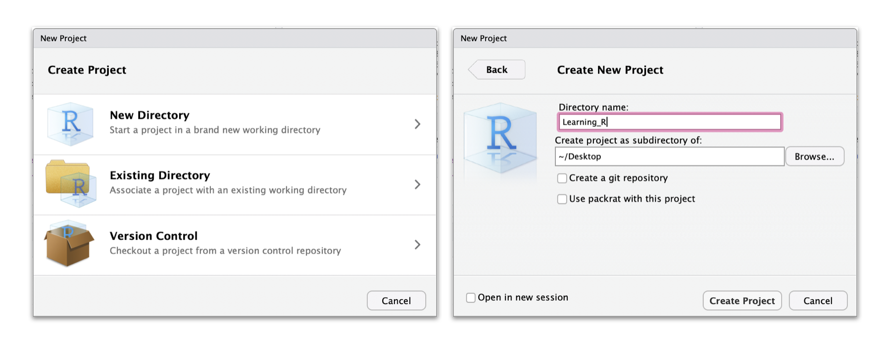
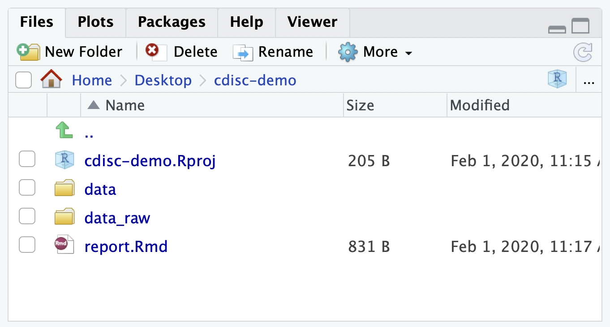

Chapter 3 RStudio IDE
The RStudio IDE open-source product is free under the Affero General Public License (AGPL) v3. The RStudio IDE is also available with a commercial license and priority email support from RStudio, Inc.
We will use RStudio IDE to write code, navigate the files on our computer, inspect the variables we are going to create, and visualize the plots we will generate. RStudio can also be used for other things (e.g., version control, developing packages, writing Shiny apps) that will not be covered in this book.

RStudio is divided into 4 “Panes”:
- The Source for your scripts and documents (top-left, in the default layout),
- Your Environment/History (top-right)
- Your Files/Plots/Packages/Help/Viewer (bottom-right)
- The R Console (bottom-left).
The placement of these panes and their content can be customized (see menu, Tools -> Global Options -> Pane Layout).
One of the advantages of using RStudio is that all the information you need to write code is available in a single window. Additionally, with many shortcuts, autocompletion, and highlighting for the major file types you use while developing in R, RStudio will make typing easier and less error-prone.
3.1 Getting set up
It is good practice to keep a set of related data, analyses, and text self-contained in a single folder, called the working directory. All of the scripts within this folder can then use relative paths to files that indicate where inside the project a file is located (as opposed to absolute paths, which point to where a file is on a specific computer). Working this way makes it a lot easier to move your project around on your computer and share it with others without worrying about whether or not the underlying scripts will still work.
RStudio provides a helpful set of tools to do this through its “Projects” interface, which not only creates a working directory for you, but also remembers its location (allowing you to quickly navigate to it) and optionally preserves custom settings and open files to make it easier to resume work after a break. Go through the steps for creating an “R Project” for this tutorial below.

3.2 Start RStudio.
- Under the File menu, click on New Project.
- Choose New Directory, then New Project.
- Enter a name for this new folder (or “directory”), and choose a convenient location for it.
- Click on Create Project.
3.3 Optional Preferences
RStudio’s default preferences generally work well, but saving a workspace to .RData can be cumbersome, especially if you are working with larger datasets. To turn that off, go to Tools –> ‘Global Options’ and select the ‘Never’ option for ‘Save workspace to .RData’ on exit.’ This step is optional, but if you love something it’s sometimes best to let it go.

3.4 Organizing your working directory
Using a consistent folder structure across your projects will help keep things organized, and will also make it easy to find/file things in the future. This can be especially helpful when you have multiple projects. In general, you may create directories (folders) for scripts, data, and documents.
- data_raw/
- data/
Use these folders to store raw data and intermediate datasets you may create for the need of a particular analysis. For the sake of transparency and provenance, you should always keep a copy of your raw data accessible and do as much of your data cleanup and preprocessing programmatically (i.e., with scripts, rather than manually) as possible.
- report.Rmd
We will be using an RMarkdown file to create our report. This allows for inline coding with plot and table outputs. We are going to keep the report in the root of our working directory because we are only going to use one file and it will make things easier. Outside of this demonstraition you’d most likely create a folder of reports and title them accordingly.
- Additional (sub)directories depending on your project needs (like scripts and functions)
We will need a data_raw/ folder for our demo project to store our raw sas7bdat files, and we will use data/ for when we learn how to export data as CSV files, and a report.Rmd file for our generated report containing figures and tables.
Under the Files tab on the right of the screen, click on New Folder and create a folder named data_raw within your newly created working directory (e.g., ~/cdisc-demo/). (Alternatively, type dir.create(“data_raw”) at your R console.)
Repeat these operations to create a data folder. Under the Files tab you can click New File then RMarkdown and create the report.Rmd.
Your working directory should now look like this:
